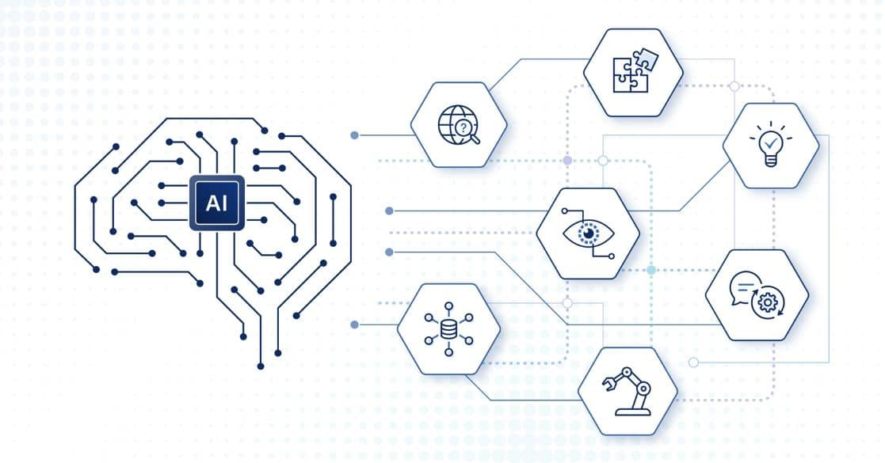

I am Rahul Gomes, Ph.D., an Associate Professor of Computer Science at the University of Wisconsin–Eau Claire, where I lead research, teaching, and mentorship in the rapidly evolving fields of artificial intelligence, machine learning, and computational science. My work spans healthcare AI, geospatial analytics, and deep learning, with a focus on building interpretable, impactful systems in collaboration with clinical, scientific, and community partners.
My research group develops advanced methods for medical image analysis, spatial transcriptomics, and AI-driven healthcare decision support—always with an emphasis on bridging the gap between algorithmic innovation and real-world application. We are passionate about interdisciplinary collaboration, engaging with fields such as biomedicine, geospatial analysis, and high-performance computing to tackle complex problems.
In the classroom, I strive to create hands-on, project-based learning experiences that prepare students for careers in AI and data science. Many of my students join my research group, gaining experience in cutting-edge projects, publishing in conferences and journals, and contributing to open-source tools.
This site highlights our ongoing projects, publications, grants, and media features, as well as the contributions of the talented students I have the privilege to mentor.
Whether you are a prospective student, a research collaborator, or an industry partner, I welcome you to explore our work and reach out for opportunities to connect.
- Research Medical imaging (IVCF, PDAC), scRNA-seq, RAG for clinical workflows, geospatial ML.
- Teaching Deep Learning, Web Systems, Programming Languages, Networks & Security.
- Students Hands-on projects, publications, and HPC-enabled undergraduate research.

Recent Updates
Loading…